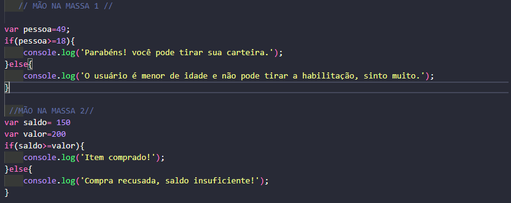

Sejam Bem Vindos ao meu portfólio!
Sobre Mim
Nascido em São Gonçalo, RJ, passei perrengue durante um bom tempo lá, e depois me mudei para uma cidade chamada Araruama durante 7 anos. Hoje moro em Búzios, e sou Estudante do IFF Campus Cabo Frio cursando técnico em Química, além de estar cursando desenvolvimento web full stack na PDA e bolsista da FAPERJ. Adoro jogar e ler, principalmente jogos indies e livros de ficção.
Habilidades
- Inglês Proeficiente
- Trabalho em equipe
- HTML básico
- CSS básico
- Raciocínio Lógico
- Digitação
Projetos e Atividades
Projeto 1

Projeto desenvolvido pelo scratch na PDA (Programadores do Amanhã) com o objetivo de apresentar objetivos e metas para nós do futuro
PROJETO SCRATCHAtividade 1

Trabalho da PDA simples onde foi exigido que usasse o javascript para mostrar uma mensagem e um número no console e dizer a idade do usuário através do console
Atividade 2
Atividades realizadas utilizando o javascript explorando os conceitos de if e else na PDA
Contato
Entre em contato comigo através das redes sociais abaixo ou me envie uma mensagem pelo email: marquessam02@gmail.com